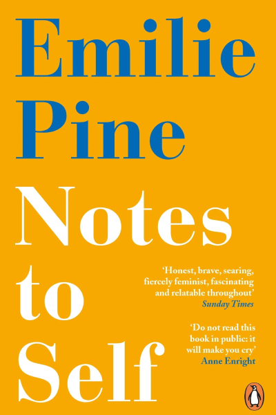

Notes to self by Emilie Pine
Published in 2018

Emilie Pine's Notes to Self is a story for all of us.
In six spellbinding essays she writes of caring for her alcoholic father, the childhood pain of her parent's separation.
her unboundaried teenage years, infertiliy and sexual violence. And, ultimately, one the unsayable has been said, the joy of letting go.